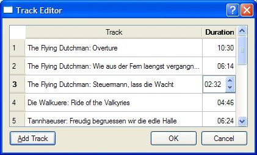

Implementing Custom DelegatesIndividual items in views are rendered and edited using delegates. In most cases, the default delegate supplied by a view is sufficient. If we want to have finer control over the rendering of items, we can often achieve what we want simply by using a custom model: In our data() reimplementation we can handle the Qt::FontRole, Qt::TextAlignmentRole, Qt::TextColorRole, and Qt::BackgroundColorRole, and these are used by the default delegate. For example, in the Cities and Currencies examples shown earlier, we handled the Qt::TextAlignmentRole to get right-aligned numbers. If we want even greater control, we can create our own delegate class and set it on the views that we want to make use of it. The Track Editor dialog shown below makes use of a custom delegate. It shows the titles of music tracks and their durations. The data held by the model will be simply QStrings (titles) and ints (seconds), but the durations will be separated into minutes and seconds and will be editable using a QTimeEdit. Figure 10.15. The Track Editor dialog The Track Editor dialog uses a QTableWidget, a convenience item view subclass that operates on QTableWidgetItems. The data is provided as a list of tracks:
class Track
{
public:
Track(const QString &title = "", int duration = 0);
QString title;
int duration;
};
Here is an extract from the constructor that shows the creation and population of the table widget:
TrackEditor::TrackEditor(QList<Track> *tracks, QWidget *parent)
: QDialog(parent)
{
this->tracks = tracks;
tableWidget = new QTableWidget(tracks->count(), 2);
tableWidget->setItemDelegate(new TrackDelegate(1));
tableWidget->setHorizontalHeaderLabels(
QStringList() << tr("Track") << tr("Duration"));
for (int row = 0; row < tracks->count(); ++row) {
Track track = tracks->at(row);
QTableWidgetItem *item0 = new QTableWidgetItem(track.title);
tableWidget->setItem(row, 0, item0);
QTableWidgetItem *item1
= new QTableWidgetItem(QString::number(track.duration));
item1->setTextAlignment(Qt::AlignRight);
tableWidget->setItem(row, 1, item1);
}
...
}
The constructor creates a table widget, and instead of simply using the default delegate, we set our custom TRackDelegate, passing it the column that holds time data. We begin by setting the column headings, and then iterate through the data, populating the rows with the name and duration of each track. The rest of the constructor and the rest of the TRackEditor dialog holds no surprises, so we will now look at the trackDelegate that handles the rendering and editing of track data.
class TrackDelegate : public QItemDelegate
{
Q_OBJECT
public:
TrackDelegate(int durationColumn, QObject *parent = 0);
void paint(QPainter *painter, const QStyleOptionViewItem &option,
const QModelIndex &index) const;
QWidget *createEditor(QWidget *parent,
const QStyleOptionViewItem &option,
const QModelIndex &index) const;
void setEditorData(QWidget *editor, const QModelIndex &index) const;
void setModelData(QWidget *editor, QAbstractItemModel *model,
const QModelIndex &index) const;
private slots:
void commitAndCloseEditor();
private:
int durationColumn;
};
We use QItemDelegate as our base class, so that we benefit from the default delegate implementation. We could also have used QAbstractItemDelegate if we had wanted to start from scratch. To provide a delegate that can edit data, we must implement createEditor(), setEditorData(), and setModelData(). We also implement paint() to change the rendering of the duration column.
TrackDelegate::TrackDelegate(int durationColumn, QObject *parent)
: QItemDelegate(parent)
{
this->durationColumn = durationColumn;
}
The durationColumn parameter to the constructor tells the delegate which column holds the track duration.
void TrackDelegate::paint(QPainter *painter,
const QStyleOptionViewItem &option,
const QModelIndex &index) const
{
if (index.column() == durationColumn) {
int secs = index.model()->data(index, Qt::DisplayRole).toInt();
QString text = QString("%1:%2")
.arg(secs / 60, 2, 10, QChar('0'))
.arg(secs % 60, 2, 10, QChar('0'));
QStyleOptionViewItem myOption = option;
myOption.displayAlignment = Qt::AlignRight | Qt::AlignVCenter;
drawDisplay(painter, myOption, myOption.rect, text);
drawFocus(painter, myOption, myOption.rect);
} else{
QItemDelegate::paint(painter, option, index);
}
}
Since we want to render the duration in the form "minutes :seconds", we have reimplemented the paint() function. The arg() calls take an integer to render as a string, how many characters the string should have, the base of the integer (10 for decimal), and the padding character. To right-align the text, we copy the current style options and overwrite the default alignment. We then call QItemDelegate::drawDisplay() to draw the text, followed by QItemDelegate::drawFocus(), which will draw a focus rectangle if the item has focus and will do nothing otherwise. Using drawDisplay() is very convenient, especially when used with our own style options. We could also draw using the painter directly.
QWidget *TrackDelegate::createEditor(QWidget *parent,
const QStyleOptionViewItem &option,
const QModelIndex &index) const
{
if (index.column() == durationColumn) {
QTimeEdit *timeEdit = new QTimeEdit(parent);
timeEdit->setDisplayFormat("mm:ss");
connect(timeEdit, SIGNAL(editingFinished()),
this, SLOT(commitAndCloseEditor()));
return timeEdit;
} else {
return QItemDelegate::createEditor(parent, option, index);
}
}
We only want to control the editing of track durations, leaving the editing of track names to the default delegate. We achieve this by checking which column the delegate has been asked to provide an editor for. If it's the duration column, we create a QTimeEdit, set the display format appropriately,and connect its editingFinished() signal to our commitAndCloseEditor() slot. For any other column, we pass on the edit handling to the default delegate.
void TrackDelegate::commitAndCloseEditor()
{
QTimeEdit *editor = qobject_cast<QTimeEdit *>(sender());
emit commitData(editor);
emit closeEditor(editor);
}
If the user presses Enter or moves the focus out of the QTimeEdit (but not if they press Esc), the editingFinished() signal is emitted and the commitAndCloseEditor() slot is called. This slot emits the commitData() signal to inform the view that there is edited data to replace existing data. It also emits the closeEditor() signal to notify the view that this editor is no longer required, at which point the model will delete it. The editor is retrieved using QObject::sender(), which returns the object that emitted the signal that triggered the slot. If the user cancels (by pressing Esc), the view will simply delete the editor.
void TrackDelegate::setEditorData(QWidget *editor,
const QModelIndex &index) const
{
if (index.column() == durationColumn) {
int secs = index.model()->data(index, Qt::DisplayRole).toInt();
QTimeEdit *timeEdit = qobject_cast<QTimeEdit *>(editor);
timeEdit->setTime(QTime(0, secs / 60, secs % 60));
} else {
QItemDelegate::setEditorData(editor, index);
}
}
When the user initiates editing, the view calls createEditor() to create an editor, and then setEditorData() to initialize the editor with the item's current data. If the editor is for the duration column, we extract the track's duration in seconds and set the QTimeEdit's time to the corresponding number of minutes and seconds; otherwise, we let the default delegate handle the initialization.
void TrackDelegate::setModelData(QWidget *editor,
QAbstractItemModel *model,
const QModelIndex &index) const
{
if (index.column() == durationColumn) {
QTimeEdit *timeEdit = qobject_cast<QTimeEdit *>(editor);
QTime time = timeEdit->time();
int secs = (time.minute() * 60) + time.second();
model->setData(index, secs);
} else {
QItemDelegate::setModelData(editor, model, index);
}
}
If the user completes the edit (for example, by left-clicking outside the editor widget, or by pressing Enter or Tab) rather than canceling it, the model must be updated with the editor's data. If the duration was edited, we extract the minutes and seconds from the QTimeEdit, and set the data to the corresponding number of seconds. Although not necessary in this case, it is entirely possible to create a custom delegate that finely controls the editing and rendering of any item in a model. We have chosen to take control of a particular column, but since the QModelIndex is passed to all the QItemDelegate functions that we reimplement, we can take control by column, row, rectangular region, parent, or any combination of these, right down to individual items if required. In this chapter, we have presented a broad overview of Qt's model/view architecture. We have shown how to use the view convenience subclasses, how to use Qt's predefined models, and how to create custom models and custom delegates. But the model/view architecture is so rich that we have not had the space to cover all the things it makes possible. For example, we could create a custom view that does not render its items as a list, table, or tree. This is done by the Chart example located in Qt's examples/itemviews/chart directory, which shows a custom view that renders model data in the form of a pie chart. It is also possible to use multiple views to view the same model without any formality. Any edits made through one view will be automatically and immediately reflected in the other views. This kind of functionality is particularly useful for viewing large data sets where the user may wish to see sections of data that are logically far apart. The architecture also supports selections: Where two or more views are using the same model, each view can be set to have its own independent selections, or the selections can be shared across the views. Qt's online documentation provides comprehensive coverage of item view programming and the classes that implement it. See http://doc.trolltech.com/4.1/model-view.html for a list of all the relevant classes, and http://doc.trolltech.com/4.1/model-view-programming.html for additional information and links to the relevant examples included with Qt. |